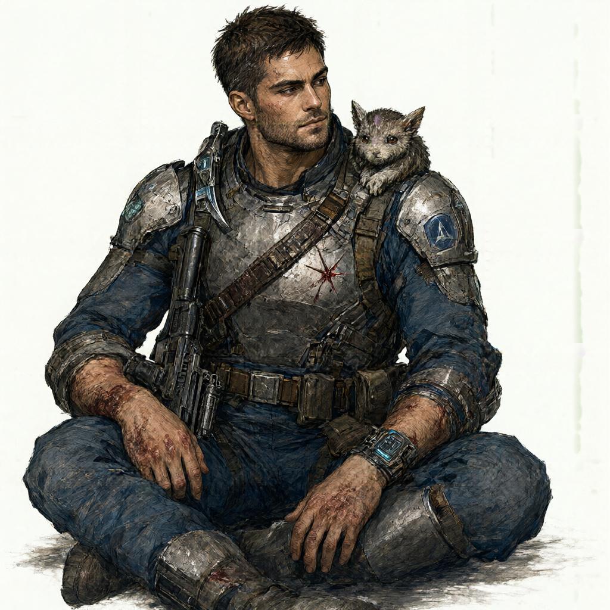

Сигурд

Промпт для модели рисования показать
Sigurd is a young man in his early twenties, possessing a sturdy, athletic build that is both robust and slightly square-shouldered. His physique reflects a blend of disciplined military training and the recent, raw physicality of survival; his muscles are defined and tense, marked by the subtle, unnatural texture changes resulting from his recent exposure to Star Blood. His skin is tanned, bearing the signs of recent hardships: faint bruises on his torso, a distinct red, star-shaped scar on his left side where a bronze alpha-drake struck him, and traces of dried blood on his hands. A short, unkempt stubble covers his jaw, adding to his rugged appearance. His face is characterized by a stern, impenetrable expression, often described as being as hard as stone, which he uses to mask his internal turmoil and analytical processes. However, his eyes hold a sharp, attentive gaze that misses nothing, capable of shifting from cold calculation to a rare, guarded warmth when he smiles. He is dressed in a worn, dirty blue "Scout" jumpsuit, part of the "Cosmos" project, which is patched and stained with the grime of his journey. Over this, he wears dented, scratched gray plastalev armor, and his gear is a chaotic mix of Earth technology and alien artifacts. Two assault rifles hang from straps across his chest, alongside a wide leather bandolier and a utility belt filled with pockets. On his wrist, he wears a cryptor bracelet and an A-energy indicator, while a curved dagger rests at his neck. A small, furry creature named Kysh, a yurr, often clings to his shoulder or neck, acting as a living fur collar and a testament to his unique affinity with the local fauna. Sigurd’s personality is defined by a profound, enigmatic reserve. He is a graduate of the Star Fleet Academy in Saint Petersburg, a specialist pilot from the high social stratum of New Arkeon, yet he carries himself with the humility of a novice in the alien world of Unity. His demeanor is calm, disciplined, and polite, but beneath this surface lies a complex, sometimes twisted logic and a deep capacity for self-reflection. He is observant to a fault, constantly analyzing his surroundings, often seen scratching the back of his head in moments of deep thought or sitting on the ground with his knees drawn up, absorbing the weight of his new reality. His charisma stems from his quiet reliability and intellectual depth. Despite his initial shock and amnesia, he possesses a strong sense of duty and loyalty to his group, the "Dynamite" squad. He is not merely a warrior but a thinker, struggling with the moral complexities of a world where ancient technology is mistaken for magic and survival is dictated by the "Star Blood." He feels a heavy burden of guilt, particularly regarding the death of the chieftain Gay, which adds a layer of tragic nobility to his character. He is curious, eager to understand the fundamental mechanics of this universe, yet often feels a sense of inadequacy and vulnerability in the face of its vast, incomprehensible scale. Sigurd’s life is one of abrupt transition. Once a man of structure and education, he is now a survivor who fell from the ship "Helga" into an alien lake, having spent days in isolation before being rescued. He is a "Rising" in the early stages of his transformation, possessing a neural interface that allows him to see augmented reality, titles, and runic manipulations. He hears a subvocal whisper in his ear, a guide to the stigmata and the war against the Worms, which adds to his air of mystery. He is drawn to animals, possessing an inexplicable ability to attract and calm them, a trait that sets him apart from his more aggressive companions. Despite his physical strength and combat skills, including the ability to fight without weapons and handle firearms with muscle memory, he remains introspective, haunted by dreams of a turquoise ocean and a brown-eyed girl, symbols of the peace and normalcy he has lost. He is a man caught between the rigid logic of his Earthly past and the mystical, chaotic reality of his present, seeking not just survival, but understanding in a world that is both beautiful and terrifying.